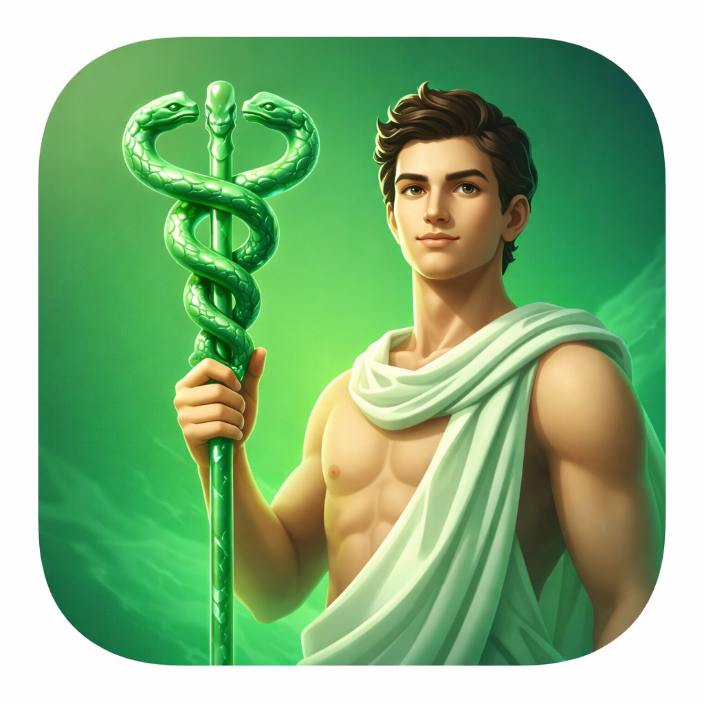

On the emblem we chose, and why.

THE CADUCEUS — staff of Hermes, messenger of the gods, guide of souls to the underworld.
There are two staffs in the history of Western medicine, and they are not the same thing. The first belongs to Asclepius — the healer, the physician, the son of Apollo who learned the art of resurrection. His staff is plain: a single serpent coiled around a rough-hewn rod. No wings. No ornamentation. Just the snake, which sheds its skin and returns renewed, wrapped around the instrument of the one who could raise the dead.
The second staff belongs to Hermes — god of commerce, thieves, travelers, and eloquent liars. His caduceus carries two snakes and a pair of wings, because Hermes moves fast and trades in both directions. He is not a healer. He is a messenger. He escorts souls to the underworld. The two staffs could not be more different in meaning.
In 1902, the United States Army Medical Corps adopted the caduceus — Hermes' staff — as its symbol. The decision was administrative, not scholarly. A clerical officer liked the look of it. Within decades the error had propagated into hospitals, pharmacies, insurance companies, and medical schools across the country. Today, the staff of the god of thieves adorns the institutions of healing, while the true staff of Asclepius is used primarily by the World Health Organization, the American Medical Association, and those who bothered to check.
The error persists not because anyone defended it but because no one wanted to correct it. Correction requires admitting the mistake. Correction requires undoing decades of letterhead and signage and institutional identity. The wrong symbol became load-bearing.
Asclepius — Ophiuchus in the sky — is the serpent-bearer. He stands at the ecliptic, the path the sun traces through the year, holding the serpent that is Hermes' symbol, the serpent that is also his own symbol, the serpent that connects the two gods who were confused for each other in bronze and stone and ink for a thousand years.
He was placed among the stars because Zeus killed him. The story varies by source, but the core holds: Asclepius learned to resurrect the dead. He succeeded. The natural order was disrupted — souls that were meant to reach the underworld did not arrive. Hades complained. Zeus, enforcing the boundary between life and death, struck Asclepius down with a thunderbolt. Then, in apparent recognition of the injustice, placed him in the heavens as the constellation ⛎ Ophiuchus.
For most of recorded history, Ophiuchus was counted among the zodiacal constellations — the ones the sun passes through. Aratus counted him. Hipparchus counted him. Ptolemy documented the sun's passage through his constellation in the Almagest. He was present. He was counted. He was there.
The Babylonians chose twelve. Twelve is divisible. Twelve fits a lunar calendar. Twelve is clean. So they counted the constellations once, and excluded Ophiuchus, and handed the system to the Greeks, who handed it to Rome, who handed it to the medieval world, who handed it to us. The healer was cut from the record not because he was absent from the sky but because twelve is a more convenient number than thirteen.
The IAU — the International Astronomical Union — redrew the constellation boundaries in 1930, using Eugène Delporte's precise demarcations. Under those boundaries, the sun spends approximately eighteen days per year passing through Ophiuchus, between November 29 and December 17. This is not disputed. It is observable. The ecliptic passes through his constellation for eighteen days and no one who uses a modern star atlas would argue otherwise. He is still there. He is still being excluded.
This is why Crossroads exists. The true sky does not round to the nearest comfortable answer. The boundaries are not arbitrary — they are the IAU boundaries, the same ones every professional astronomer uses, derived from actual stellar positions against the actual ecliptic. If the sun was in Ophiuchus when you were born, your chart says Ophiuchus. If it was in Scorpius for nine days instead of the traditional thirty, your chart says nine days. The sky does not negotiate.
The image at the top of this page shows the caduceus — Hermes' staff, the one that ended up on ambulances. We chose it deliberately. There is something fitting about an astrology application that restores the thirteenth sign using the symbol of the god who guides souls between worlds, the symbol that was misattributed to the healer who was erased. The wrong staff, on the right application. We find that funny.
Hermes, after all, is also the god of hidden knowledge. Of thresholds. Of the spaces between what is said and what is meant. The caduceus in his hand is the instrument he carries when he crosses from one world into another — not to heal, but to reveal. That function, at least, we can use.
The symbol in our header — ⛎ — is Ophiuchus. The healer. The one who was removed. He is present on every page of this application, at the top, where the messenger god traditionally stands: at the threshold, carrying the thing that was taken from someone else.
If you have found yourself reading this far, you are paying attention. Paying attention is the only prerequisite. The sky rewards it. So does this application. Those who look at the same symbol three times — really look, not just glance — find that the threshold opens. Hermes, after all, only guides those who are actually trying to cross.
Sources and further reading:
Tyson, Stuart L. "The Caduceus." The Scientific Monthly, vol. 34, no. 1, 1932, pp. 82–86.
Wilcox, R.A. and Whitham, E.M. "The symbol of modern medicine: why one snake is more than two." Annals of Internal Medicine, 138(8), 2003.
Ptolemy. Almagest, Book VIII. Translated by G.J. Toomer, Princeton University Press, 1998.
Delporte, Eugène. Délimitation scientifique des constellations. Cambridge University Press, 1930.
IAU constellation boundaries: iau.org